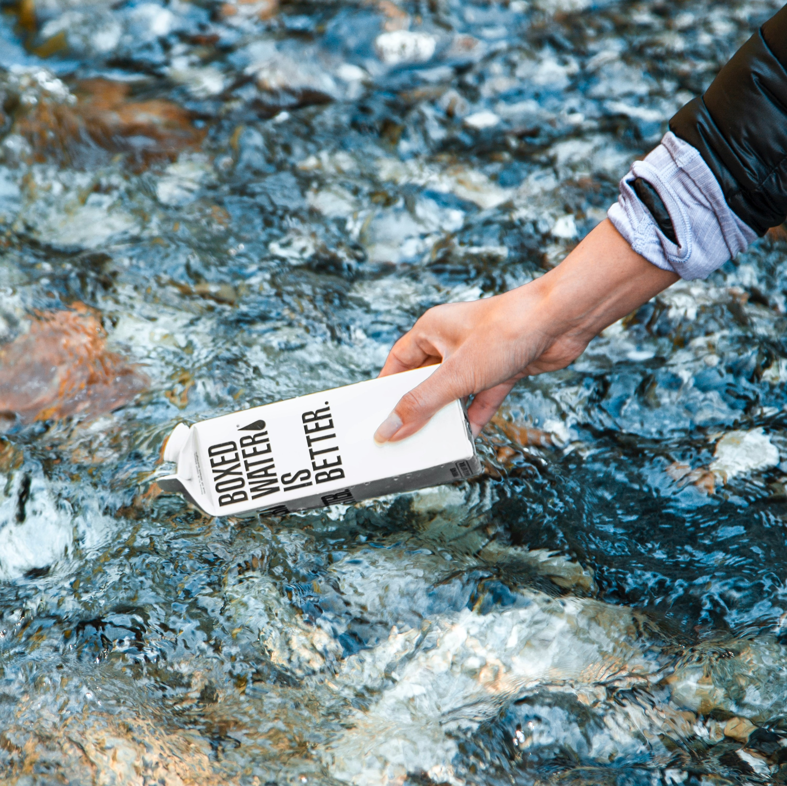

Екологія, перш за все, це наука, що вивчає взаємовідносини живих організмів між собою та навколишнім середовищем. Вперше цей термін вжив німецький вчений Е. Геккель у 1886 році, адже походить від грецьких слів oikos, що означає дім, помешкання та logos — наука. Як писав науковець: «Під екологією ми розуміємо суму знань, які належать до економіки природи: вивчення всієї сукупності взаємовідносин тварини з навколишнім середовищем як органічним, так і неорганічним і насамперед — її дружніх і ворожих стосунків з тими тваринами і рослинами, з якими вона прямо чи опосередковано вступає в контакт».
Звичайно, що екологія залишається біологічною наукою, оскільки досліджує сукупність та взаємодію живих об'єктів. Однак, на сучасному етапі розвитку суспільства ця наука розширила межі вивчення проблем, користуючись новими методами, матеріалами, принципами, які є непритаманними їй як біологічній науці. Тобто екологію також можна вважати як гуманітарну науку, у зв’язку з появою нових завдань для її досліджень, а саме: визначення місця людини в природі, формування її світогляду та сприяння оптимізації розвитку соціальних та виробничих процесів. Сучасна екологія — одна з головних фундаментальних наук, що є своєрідною філософією виживання людства.
Чому ця наука має вплив на наше життя?
Безперервна взаємодія, постійний обмін речовин та енергії з навколишнім середовищем — це те, на чому базується існування людства. 3 самого початку нашого перебування на планеті — здоров'я людей формувалось залежно від впливу природних факторів на організм, яке досі впливає на довготривалість нашої життєдіяльності. На перших етапах розвитку людства виробнича діяльність базувалась на природних силах нашого довкілля: енергія вітру, води, викопні ресурси. А тому його вплив на природне середовище був незначним. Однак вже у ХХ ст. людство отримало можливість користуватись невичерпним джерелом ресурсів, що раніше не були доступними, що зумовило активний вплив на довкілля.


Відтоді і виникла потреба в екології у житті суспільства. Тепер її завданнями для людства є прогнозування та конструювання результатів того чи іншого впливу людини на природу. Також вплив цієї науки на життя людини зумовлений тим, що всі процеси у нашій біосфері взаємозалежні, тому взаємозв’язок між людством та цією наукою є важливим етапом у боротьбі з усіма спричиненими “environmental issues”. Адже у вирішенні цих проблем головна роль належить саме екології. А суспільству насамперед потрібно переосмислити своє ставлення до природи, тоді почати глибоке вивчення генезису та розвитку складних взаємозв'язків і процесів у навколишньому середовищі з метою поєднання інтересів технічного прогресу і захисту довкілля.
Наразі людство, усвідомлюючи глибину можливої екокатастрофи, спричиненої змінами клімату, робить все можливе, щоб зупинити чи відтермінувати ці зміни.© Людмила Циганок
За останні кілька десятиліть антропогенні зміни торкнулися практично усіх закутків нашої планети й, навіть, найближчого космічного простору — експлуатація нашої планети та деградація нашого довкілля призвела до небезпечних наслідків. Стихійні лиха “нокаутують” людство все частіше: повені, землетруси, хуртовини, цунамі та циклони. Тому найважливішим завданням сучасності стало глобальне поліпшення, вдосконалення природокористування для власної ж безпеки та благополуччя. За допомогою погодження планів цієї діяльності між країнами, виконання силами міжнародної співдружності глобальних заходів з охорони біосфери планети.
Rapid global warming is unlike anything experienced before by modern human societies – presenting us with huge challenges in terms of our ability to adapt.© Penny WhettonСтрімке глобальне потепління є несхожим ні на що, що було раніше в сучасному людському суспільстві - ставлячи перед нами величезні завдання щодо нашої здатності адаптуватися
Проблеми нашого довкілля
1. Одним із основних видів негативного антропогенного впливу є забруднення повітря. Ця проблема зумовлена викидами в атмосферу хімічних речовин, твердих частинок і біологічних матеріалів. Зокрема, речовини, що надходять в атмосферу при спалюванні палива найбільш її забруднюють, а саме це тверді частинки (попіл, сажа), оксиди сірки (SO2 і SO3), оксиди азоту (NO і NO2). А при неповному згорянні палива в газоподібних викидах можуть накопичуватися оксиди вуглецю (СО), бензопірен (С20Н12), а також п'ятиокис ванадію (V2O5). Останні дві сполуки належать до класу надзвичайно небезпечних. Також повітря забруднюють рідкі речовини, що утворюються при конденсації пари, розпиленні і розливі рідин (кольорова металургія, виробництво цементу). А також промисловий пил.
2. Близько 30 відсотків площі суші планети вкриті лісами – це приблизно вдвічі менше, ніж до початку сільського господарства (приблизно 11 000 років тому). Сьогодні на Землі знищується 14 млн га. лісу щороку. З яких 130 000 км² (0,8 — 2 %) це тропічні ліси, яких вважають «легенями» планети. У багатьох державах що розвиваються, вирубка проводиться через використання деревини як палива, крім того, ліси знищують для одержання орних земель, тобто для сільського господарства. Також відбувається поступова деградація лісів від забруднення атмосфери і ґрунтів, масове всихання верхівок дерев, внаслідок пошкодження кислотними дощами.
3. Без землекористування неможливий подальший розвиток сільського господарства, однак це незабаром може стати реальністю, а причиною є деградація земель. Тобто погіршення корисних властивостей та родючості ґрунту внаслідок впливу природних чи антропогенних факторів. Для людства це лише означає зниження або можливу втрату біологічної і економічної продуктивності і складної структури орних земель. Внаслідок негативного впливу людини науковці прогнозують за наявних темпів ерозії та зменшення лісового покриву до 2030 року: родючої землі на планеті стане менше на 960 млрд т, а лісів — на 440 млн га.
4. Зменшення популяції, вимирання та цілеспрямоване знищення біологічних видів також є основними факторами, що сприяють деградації нашого довкілля. Згідно з висновками вчених, людство почало знищувати види інших організмів прискореними темпами, ініціюючи вимирання з рекордною за останні 65 мільйонів років швидкістю. Така проблема пов’язана напряму зі світовою екологічною спадщиною, що регулює антропогенний та природний вплив на екосистеми.
Екологічна спадщина в сучасному світі
Насамперед поняття “екологічна спадщина” можна тлумачити як спрямовані послідовні зміни угруповань організмів на певній ділянці середовища. Зокрема, досліджуються біологічні види, що змінюються внаслідок природних або антропогенних впливів. Тобто екологічна спадщина, або сукцесія, описує типові природні зміни видів у загальній екосистемі впродовж певного часу. Такі зміни призводять до того, що кількість деяких видів може поступово збільшуватись, тоді як інші можуть занепадати або зникати з екосистеми.
Екологічна сукцесія (спадщина) — це важливий аспект такої науки як екологія, адже такі дослідження екосистеми планети допомагають вчасно виявити загрозу для біологічних видів та запобігти їхньому зникненню. Сукцесія також відрізняє типи впливу за градієнтом серйозності втручання в екосистему та пояснює те, як природні й антропогенні чинники впливають на траєкторії розповсюдження біологічних видів та швидкість їх відновлення у разі занепадання. Її причинами є, перш за все, діяльність людини, що зумовила зміни клімату, проте також це природні катаклізми (виверження вулканів, землетруси, повені). У сучасному аспекті екологічної спадщини важливе значення надається біотичним чинниками, оскільки певні види організмів сукцесійного угруповання здатні змінювати умови існування інших видів, впливаючи позитивно або негативно. У більшості випадків рушійними чинниками змін і розвитку нестійких екосистем є незбалансованість кругообігу речовин і зменшення видового біорізноманіття. Це зумовлює появу проблем для нашого навколишнього середовища, за якість якого повинне турбуватись, зокрема, людство.
Отже, екологія як наука сформувалася у принципово нову інтегровану дисципліну, яка поєднує всі природничі, точні, гуманітарні та соціальні науки. Метою якої є розвиток нашого екологічного мислення, підпорядкування практичної діяльності люд законам природи та перебування економіки відповідно до вимог збереження стану довкілля.